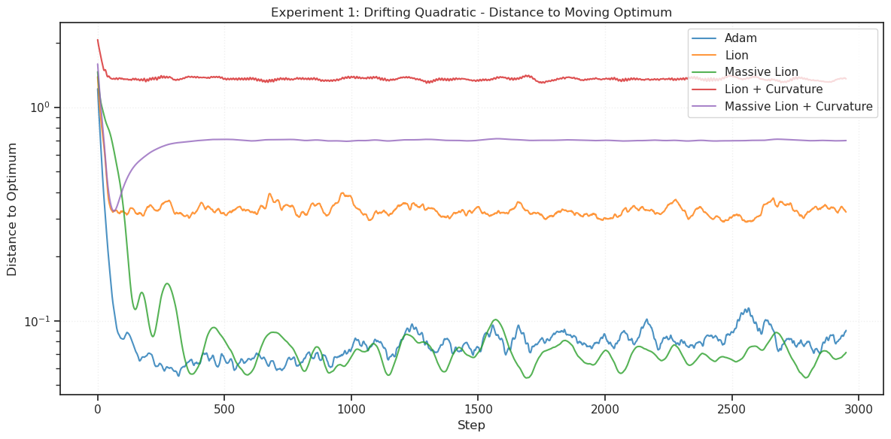
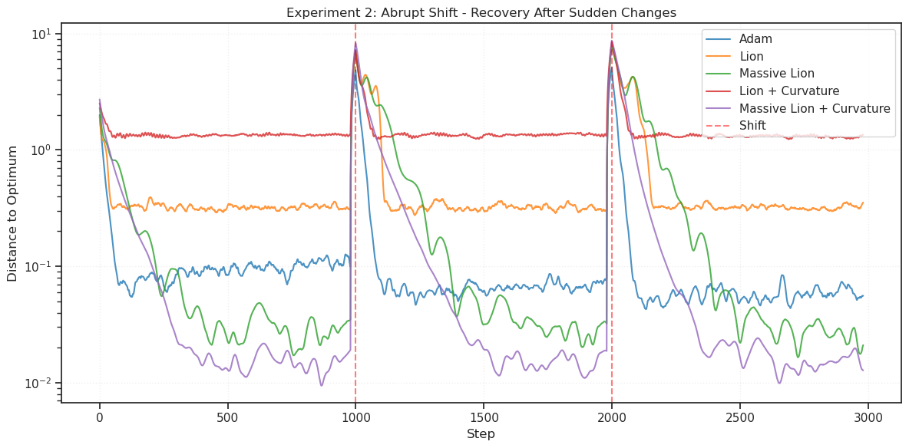
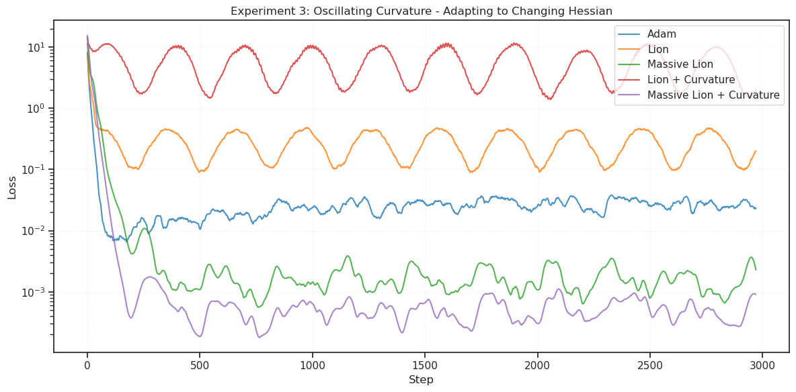
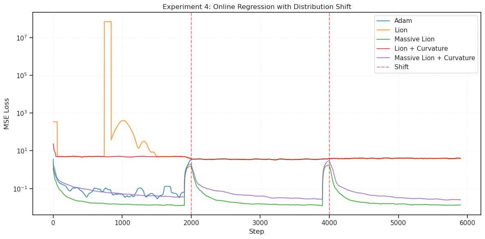
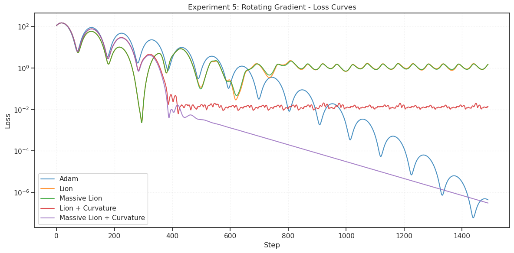
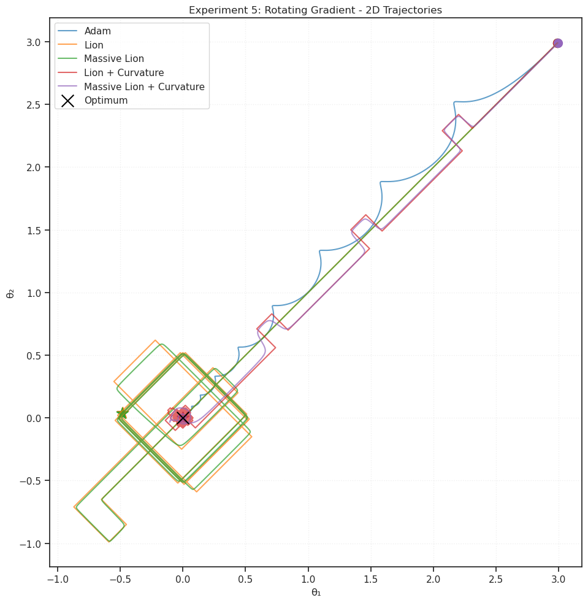
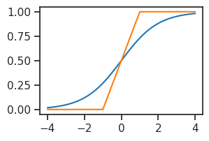
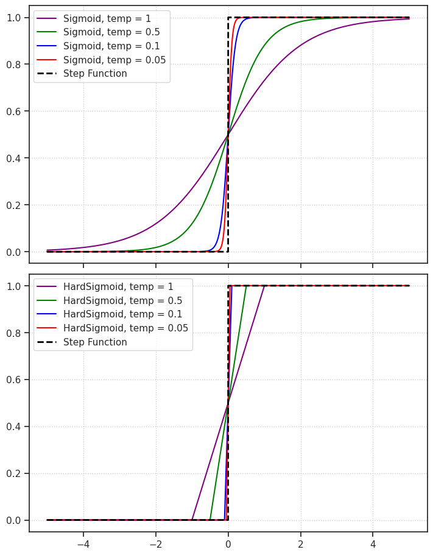

tmp — dec25#
Motivation: scratch notebook
from test.nonstationary import (
run_all_experiments,
compute_recovery_metrics,
print_recovery_metrics,
run_curvature_ablation,
)
all_results = run_all_experiments(save_plots=False, show_plots=True)
======================================================================
NONSTATIONARY OPTIMIZATION EXPERIMENTS
======================================================================
[1/5] Running Drifting Quadratic experiment...
[2/5] Running Abrupt Shift experiment...
[3/5] Running Oscillating Curvature experiment...
[4/5] Running Online Regression experiment...
[5/5] Running Rotating Gradient experiment...
======================================================================
All experiments complete!
======================================================================






# Compute and print recovery metrics for abrupt shift
if 'shift' in all_results:
recovery_metrics = compute_recovery_metrics(
all_results['shift'],
shift_times=[1000, 2000],
metric='distances'
)
print_recovery_metrics(recovery_metrics)
# Optional: Run curvature ablation
print("\n" + "=" * 70)
print("Running curvature correction ablation...")
print("=" * 70)
ablation_results = run_curvature_ablation()
Recovery Metrics After Distribution Shifts
----------------------------------------------------------------------
Optimizer Spike Ratio Recovery Time Asymp. Ratio
----------------------------------------------------------------------
Adam 32.05 6.0 0.20
Lion 19.38 23.0 0.69
Massive Lion 36.09 24.0 0.66
Lion + Curvature 2.97 18.5 1.51
Massive Lion + Curvature 2.70 17.5 1.34
======================================================================
Running curvature correction ablation...
======================================================================
from base.dataset import make_dataset
_, vld, _ = make_dataset('ImageNet32', skip_trn=True)
vld[0].shape, vld[1].shape
(torch.Size([50000, 3, 32, 32]), torch.Size([50000]))
len(torch.unique(vld[1]))
1000
t = 0.1
x = torch.linspace(-4, 4, 1000)
y = torch.sigmoid(x)
y2 = indicator = torch.clamp(0.5 * x + 0.5, min=0.0, max=1.0)
plot(x, y)
plot(x, y2)
[<matplotlib.lines.Line2D at 0x73d883782490>]

x = torch.linspace(-5, 5, 10000)
fig, axes = create_figure(2, 1, figsize=(7, 9), sharex='all')
temperatures = [1, 0.5, 0.1, 0.05]
colors = ['purple', 'green', 'blue', 'red']
for temp, c in zip(temperatures, colors):
y = tonp(torch.sigmoid(x / temp))
axes[0].plot(x, y, label=f'Sigmoid, temp = {temp}', color=c)
y = tonp(torch.clamp(0.5 * x / temp + 0.5, min=0.0, max=1.0))
axes[1].plot(x, y, label=f'HardSigmoid, temp = {temp}', color=c)
y = tonp(torch.where(x >= 0, 1, 0))
for ax in axes.flat:
ax.plot(x, y, label='Step Function', color='black', lw=2, ls='--')
ax.legend()
ax.grid()
plt.show()
